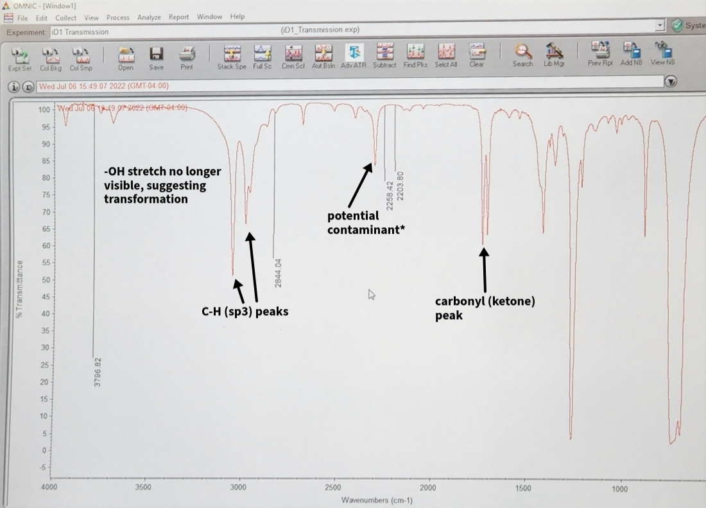
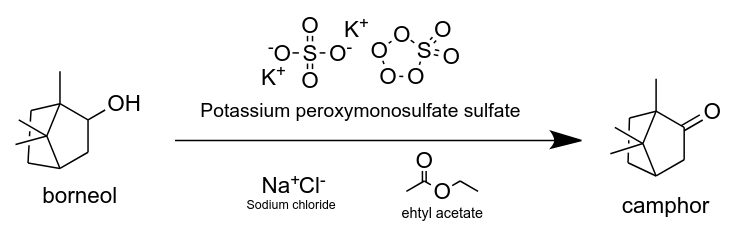
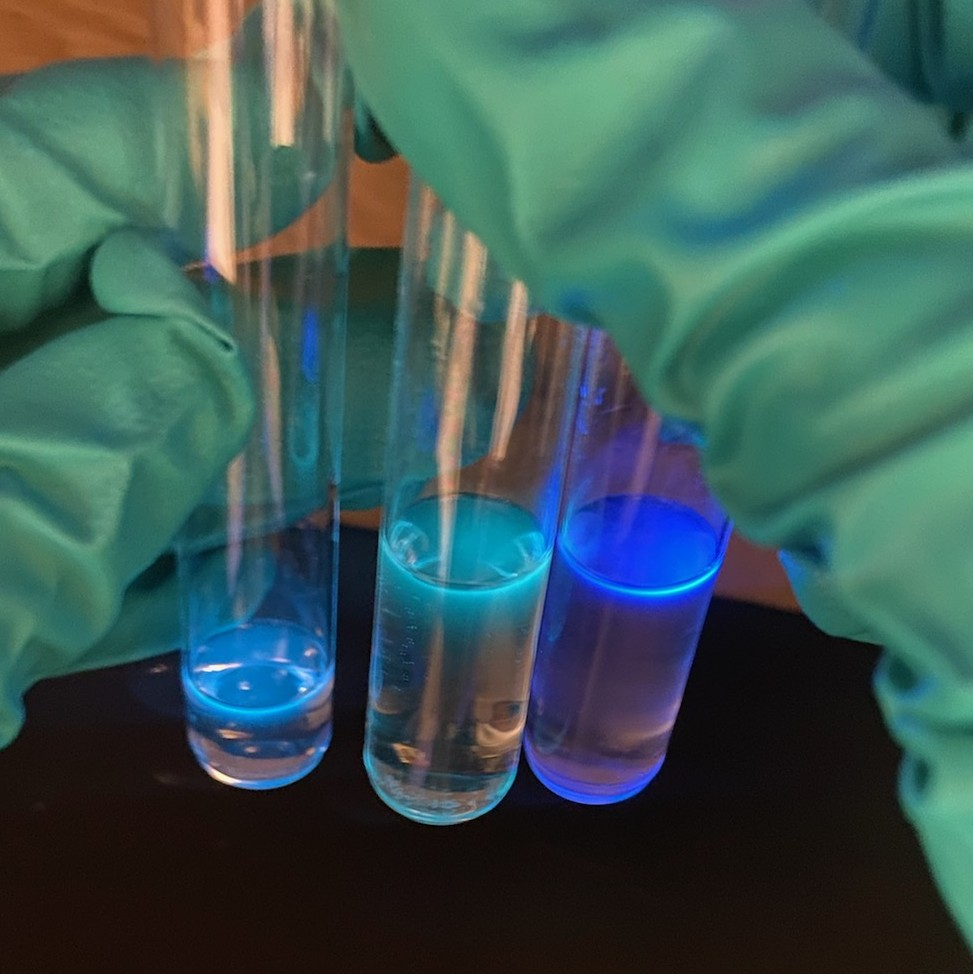

IR spectra:
Oxidation of Borneol.
Target molecule: camphor
The oxidation was completed using Oxone, a greener alternative to classic oxidation reagents such
as PCC or chromic acid derivatives.
As seen in the spectra (left), the product was produced, however the peak at ~2250 cm-1 was not
expected. This peak would normally be indicative
of a triple bond, however no triple bond was expected. The most likely side-product, an alcohol
derivative resulting from hydrolysis, would
be characterized by a broad peak above 3000cm-1 (as would Borneol).
Thus, it is hypothesized that the NaCl plates used introduced contaminants. Unfortunately, we only had
access to
plates that were in fairly poor condition, both physically (chipped) and also stained. They were cleaned
thoroughly with DCM, but this may have
not been enough.

Reaction overview

Fluorescence assay:
A qualitative assessment of Pechmann Condensation product under acidic and basic
conditions.
Target molecule: 4-methylumbelliferone.

Experimental design

The Diels-Alder reaction:
NMR results from [4+2] cycloaddition product via reflux of anthracene and maleic anhydride.
Target product: 9,10-dihydroanthraceno,9,10-a,b-succinic anhydride.
The 1H-NMR was used to determine that the product was produced; deshielding can be seen, most notably
with with "D". Despite the fact that
it is a sp3 hybridized C-H group, the aromatic rings next to it result in a higher shift.
The small peaks seen below 2.5ppm may be due to the C-H hydrogens,
from left over reactants, or potentially from the presence of side products. It also possible that the
peaks are simply noise, as the NMR machine
used for this sample was a simple desktop one.